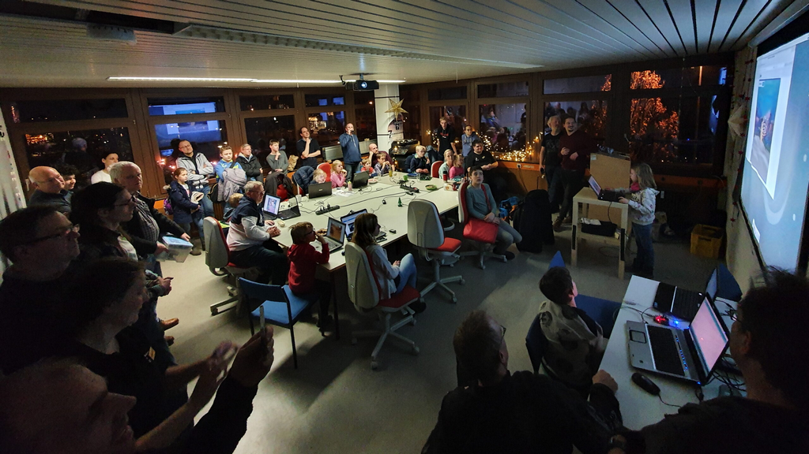

{% block content %}
{% filter markdown|typogrify -%}

<div class="article__image-left">
	
</div>

Jetzt für den Mainframe bzw. KtT e.V. abstimmen!

Wir haben uns bei der Aktion “Wir. Hier. Jetzt. Gemeinsam Energie sparen!” der
EWE beworben, um den Konferenzraum und die Elektronikwerkstatt vor allem für
unser CoderDojo energieeffizienter nutzen zu können.

Die Jury hat uns unter die ersten 10 von über 80 Projekten gewählt und jetzt
geht es per Online-Abstimmung weiter: wir brauchen bis Ende Februar genug
Stimmen, um mindestens unter die ersten 5 Projekte zu kommen - und idealer
Weise natürlich noch weiter nach oben ;)

Bitte stimmt auf [https://wir-hier-jetzt.com/kreativitat-trifft-technik-e-v/](https://wir-hier-jetzt.com/kreativitat-trifft-technik-e-v/)
für uns ab!

Gewinnen und Energie sparen kann bei der Aktion nicht nur der Verein bzw.
Space! Wer abstimmt, kann Preise wie smarte Heizkörperthermostate und
LED-Lampen gewinnen und zu Hause Energie sparen!

Abstimmen und Weitersagen! DANKE!

{%- endfilter %}
{% endblock content %}
